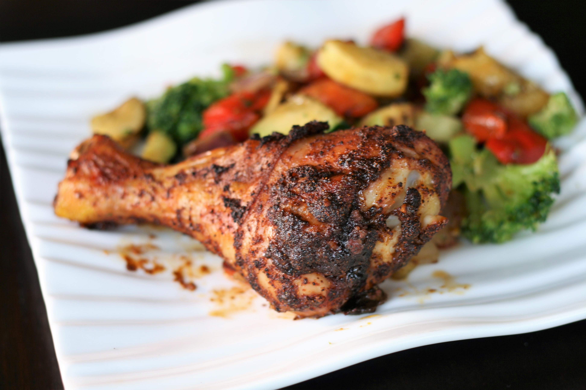

Crispy Baked Chicken Legs

Description
Crispy Baked Chicken Legs inspired by a random recipe website.
Quick and easy method to make chicken legs.
Ingredients
- chicken legs(duh)
- 2 tablespoons chilli powder
- 1 tablespoon garlic powder
- 1 teaspoon cayenne pepper
- 1 teaspoon himalayan pink salt
- 2 tablespoons tamari
Steps
- Preheat the oven to 375 degrees F (190 degrees C).
- Place chicken legs in a large bowl.
- Spread chili powder, garlic powder, cayenne, and salt onto the chicken; pour sauce over top.
- Mix thoroughly and transfer to a baking sheet.
- Bake, uncovered, in the preheated oven until chicken is no longer pink at the bone and the juices run clear, 45 to 50 minutes.
- An instant-read thermometer inserted near the bone should read 165 degrees F (74 degrees C).
- Your crispy baked chicken legs should now be ready!